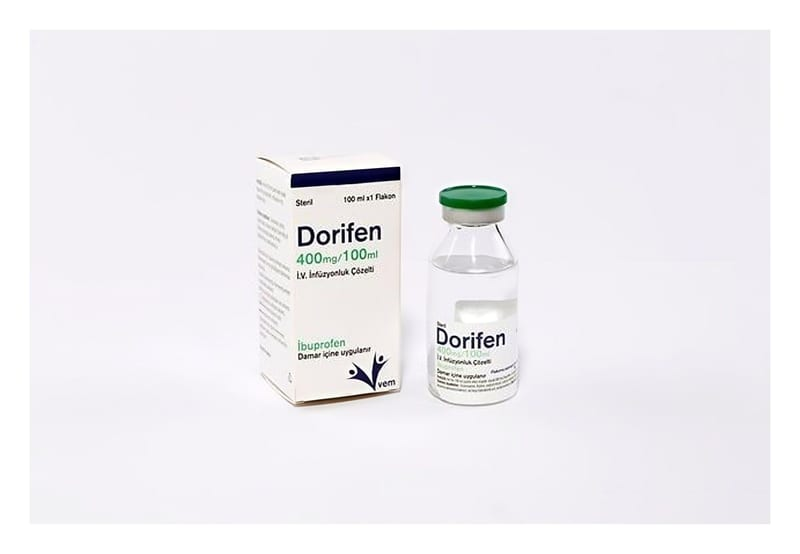

Dorifen 400 mg/100 ml İ.V. İnfüzyonluk Çözelti (Caldofen), 1 Adet

Ne için kullanılır
KT · Bölüm 1İbuprofen “non-steroidal anti-inflamatuvar ilaçlar” veya NSAİİ’ler olarak bilinen bir ilaç grubuna aittir. DORİFEN, berrak renksiz, infüzyon için çözelti içeren 1 adet flakondan oluşur. DORİFEN, kutuda 100 ml’lik flakon içinde çözelti olarak bulunur. Her 100 ml çözelti 400 mg ibuprofen etkin maddesini içerir. DORİFEN, ağrının ya da hiperterminin (yüksek ateş) tedavisi için damar içi yolun klinik olarak gerekli görüldüğü acil durumlarda ve/veya diğer uygulama yollarının mümkün
olmadığı durumlarda (özellikle cerrahi girişimlerden sonra, orta şiddette ağrının ve ateşin kısa süreli tedavisinde) kullanılır.